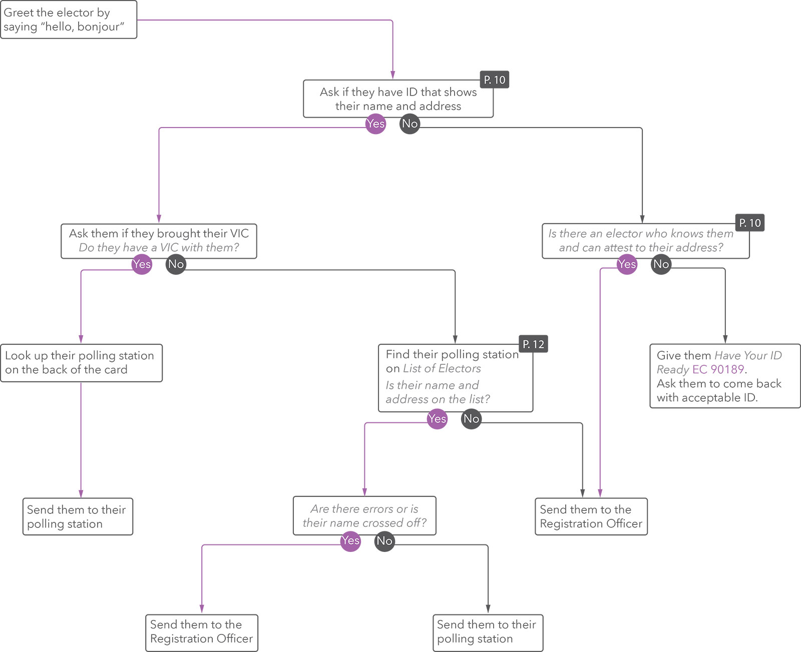

List of supplies
Liste de matériel
-
Alphabetical List of Electors by Site
inside Large All-Purpose Envelope EC 11520
-
Poll Key (if no Registration Officer)
inside Large All-Purpose Envelope EC 11520
-
File folders with candidates' names
(only on election day)
-
EC 10130 Appointment and Oath
keep it with you at all times
-
EC 50255 VIC Collection Box
-
EC 50471 Supplies Kit for Information Officer that includes
- Black Pen
- EC 50145 Bilingual Welcome Card -
pack of 5
- EC 50210 Election Personnel Identification Card
- EC 50291 Paper Ruler
-
EC 90189 Have Your ID Ready -
1 pad
the office decides what day you will recieve your supplies.
-
Liste électorale alphabétique par lieu de scrutin
dans Grande enveloppe tout usage EC 11520
-
Indicateur des sections de vote (s'il n'y a pas d'agent d'inscription)
dans Grande enveloppe tout usage EC 11520
-
Chemises portant les noms des candidats
(seulement le jour de l'élection)
-
EC 10130 Nomination et serment
gardez-le avec vous en tout temps
-
EC 50255 Boîte pour la cueillette des CIÉ
-
EC 50471 Trousse de fournitures pour préposé à l'information qui contient
- stylo noir
- EC 50145 Carte de bienvenue bilingue -
paquet de 5
- EC 50210 Carte d'identité pour le personnel électoral
- EC 50291 Règle de papier
-
Préparez vos pièces d'identité -
1 bloc
le moment où vous recevrez votre matériel est déterminé par le bureau.
Serve electors
Servez les électeurs

Description of the flowchart
- Greet the elector by saying "hello, bonjour"
- Ask if they have ID that shows their name and address
- If they brought ID with them, ask them if they brought their VIC
- If they did, look up their polling station on the back of the card and send them to their polling station
- If they did not, find their polling station on the List of Electors. Is their name and address on the list?
- If they are on the List of Electors, are there any errors or is their name crossed off?
- If there are errors or send them to the Registration Officer
- If there are no errors, send them to their polling station
- If they are not on List of Electors, send them to the Registration Officer
- If they did not bring ID with them, is there an elector who knows them and can attest to their address?
- If there is someone to attest for them, send them to the Registration Officer
- If there is no one with them, give them Have Your ID Ready EC 90189 and ask them to come back with acceptable ID.
if there is no Registration Officer or they are busy, you can find the elector's polling station on the Poll Key
s'il n'y a pas d'agent d'inscription ou s'ils sont occupés, vous pouvez trouver le burearu de vote d'un électeur dans l'Indicateur des sections de vote.
Keep List of Electors covered when you are not using it
Gardez la Liste électorale à l'abri des regards quand vous ne vous en servez pas
VICs
- Collect them after electors vote
- Put them in the collection box, not the trash
- Check around polling place regularly to collect cards left by electors
- Electors wants to keep their VIC *
CIÉ
- Recueillez-les après que les électeurs ont voté
- Mettez-les dans la boîte de cueillette, pas dans la poubelle
- Faites régulièrement le tour du lieu de vote pour ramasser les CIÉ laissées par des électeurs
- Électeur veut garder sa CIÉ *
Send to CPS
- Complaints or problems
- Difficult candidates' representatives
- Elector wants to be removed from the List of Electors permanently
- Elector has or needs a language or sign-language interpreter
Dirigez vers le SCS
- Les plaintes ou les problèmes
- Les représentants de candidat difficiles
- Tout électeur qui veut être rayé de la Liste électorale de façon permanente
- Tout électeur qui a ou a besoin d'un interprète, ou d'un interprète gestuel
Traffic
- Only let a few electors inside at a time
- Ask electors waiting to vote to move away from voting screens
- Politely ask electors who have already voted to leave
Circulation
- Ne laissez entrer que quelques électeurs à la fois
- Demandez aux électeurs qui attendent pour voter de se tenir loin des isoloirs
- Demandez poliment aux électeurs qui ont déjà voté de quitter
Other situations *
- Elector has Transfer Certificate
- Elector wants to be served in French
- Elector with a disability needs help
- Elector's VIC contains errors
Autres situations *
- Électeur a un Certificat de transfert
- Électeur veut être servi en anglais
- Électeur a une déficience et a besoin d'aide
- Électeur dont la CIÉ contient des erreurs
Other information *
- Cell phones inside polling place
- Media representatives and photographers
- Offences and suspicious activities
Autres renseignements *
- Téléphones cellulaires dans le lieu de vote
- Représentants des médias et photographes
- Infractions et activités suspectes
Candidates and their representatives
Candidats et leurs représentants
Greet them and send them to the CPs or designated DRO. Their main point of contact at your polling place is the CPS or designated DRO, who can ask them to leave or have removed if they don't follow Guidelines for Candidates' Representatives EC 20045
They may
- be under 18 years of age
- be a non-Canadian citizen
- observe activties at your polling place
- collect the Statement of the Electors Who Voted on Polling Day EC 50111 (bingo sheet) throughout election day
- at the close of advance polls every night, request a photocopy of each Statement of the Electors who Voted at the Advance Poll EC 50109 (bingo sheet)
They may not
- interfere withthe voting process
- disobey CPS or DRO directions or decisions
- bring in any documents, folders, clothes or items that show the name, emblem or colour of a political party or candidate (CPS or designated DRO decides what is acceptable)
Set up for candidates' representatives
Do these steps on election day only.
- Set up a table near the entrance for candidates' representatives
- Lay out file folders with candidate names on the table
- Every 60 minutes, collect Statement of the Electors Who Voted on Polling Day EC 50111 (bingo sheet) from each Poll Clerk
- 2 sets of forms if there are 4 to 7 candidates
- 3 sets if there are 8 to 11 candidates
- Put a copy of each form you collect in every folder
When representatives asks for bingo sheets
- Ask to see their Authorization of a Candidate's Representative EC 20020
It should be folded inside Plastic Badge Holder EC 20909 behind a Candidate's Representative Badge EC 20901
candidates do not need an authorization form or badge.
- Check that the Election Officer Section is signed and dated by a CPS or DRO
- If it is not, or they don't have a form, send them to CPS
At advance polls, send them directly to CPS
- Do the following steps on election day only
- Give them the bingo sheets from the folder for their candidate
- Put the empty folder back on the table
Accueillez-les et dirigez-les vers le SCS ou le scrutateur désigné. Le SCS ou le scrutateur désigné est leur principale personne-ressource à votre lieu de vote et peut leur demander de quitter les lieux ou les faire expulser s'ils ne se conforment pas aux Lignes directrices pour les représentants des candidats EC 20045.
Ils peuvent
- être âgé de moins de 18 ans
- ne pas être citoyen canadien
- observer les activités à votre lieu de vote
- recueillir, tout au long du jour de l'élection, les Relevés des électeurs qui ont voté le jour du scrutin EC 50111 (cartes de bingo)
- à la fermeture des bureaux de vote à chaque soir du vote par anticipation, demander une photocopie de chaque Relevé des électeurs qui ont voté par anticipation EC 50109 (carte de bingo)
Ils ne peuvent pas
- s'ingérer dans le processus de vote
- désobéir aux directives ou aux décisions du SCS ou du scrutateur
- apporter sur place tout document, dossier, vêtement ou autre élément montrant le nom, l'emblème ou la couleur d'un parti politique ou d'un candidat (le SCS ou le scrutateur désigné décide ce qui est acceptable)
Installation pour les représentants des candidats
Faites ces tâches seulement le jour de l'élection.
- Installez une table près de l'entrée pour les représentants des candidats
- Placez sur la table les chemises portant les noms des candidats
- À toutes les 60 minutes, recueillez le Relevé des électeurs qui ont voté le jour du scrutin EC 50111 (carte de bingo) de chaque greffier du scrutin
- 2 ensembles de formulaires s'il y a de 4 à 7 candidats
- 3 ensembles s'il y a de 8 à 11 candidats
- Mettez dans chaque chemise une copie de chaque formulaire que vous recueillez
Quand un représentant demande les cartes de bingo
-
Demandez à voir son Autorisation du représentant d'un candidat EC 20020
Elle devrait être pliée à l'intérieur d'un Porte-insigne en plastique EC 20909 derrière un Insigne d'identité du représentant du candidat EC 20901
les candidats n'ont pas besoin d'un formulaire d'autorisation ou d'un insigne.
- Assurez-vous que la Section réservée au fonctionnaire électoral est signée et datée par un SCS ou un scrutateur
-
Si cette section n'est pas signée et datée ou si le représentant n'a pas de formulaire, dirigez-le vers le SCS
Aux bureaux de vote par anticipation, dirigez-le directement vers le SCS
- Faites les tâches suivantes seulement le jour de l'élection
- Donnez-lui les cartes de bingo de la chemise pour son candidat
- Replacez la chemise vide sur la table
Elector eligibility and identification
Admissibilité et identification de l'électeur
To vote at your polling place, an elector must be
- at least 18 years old on election day
- a Canadian citizen
- on the List of Electors or have a Register or Transfer Certificate
- living at an address assigned to a polling station at your polling place
Elector identification options
Documents must be in English or French (or Inuktitut in Nunavut) and in their original format. E-statement and e-invoice printouts are accepted and can also be shown on a mobile device.
Expired documents are accepted if they show the elector's name and current address. Documents to which the name or address have been added by hand are not accepted, unless they have been added by the issuer of the document.
Refer to Have Your ID Ready EC 90189 when you're not sure
| Option 1 |
Show driver's licence, provincial/terrirtorial ID card or any other government card with their photo, name and current address |
| Option 2 |
Show 2 different pieces of ID from the list both with their name and at least one with their current address
They have to be different (2 bank statements for the same account are not accepted) |
| Option 3 |
Show 2 different pieces of ID from the list with their name and have another elector attest to their address. Both electors have to sign the Oath of Residence Certificate
The attestor must
- know the elector and where they live
- live in the same polling division
- be on the List of Electors or have a Registration Certificate
- show proof of identity and address
- have not attested to another elector's address
- have not had their own address attested to
|
in some areas, ID may not show a residential address (e.g. PO box). If the address on their ID matches their address on the List of Electors, the document is accepted.
Pour voter à votre lieu de vote, l'électeur doit
- avoir au moins 18 ans le jour de l'élection
- être citoyen canadien
- être inscrit sur la Liste électorale ou avoir un Certificat d'inscription ou de transfert
- habiter à une adresse assignée à un bureau de vote à votre lieu de vote
Options d'identification de l'électeur
Les documents doivent être en français ou en anglais (en Inuktitut au Nunavut) et dans leur format original. Les relevés de compte et les factures électroniques imprimées sont acceptés et peuvent être montrés sur un appareil mobile.
Les documents échus sont acceptés s'ils portent le nom et l'adresse actuelle de l'électeur. Les documents dont le nom ou l'adresse a été rajouté à la main ne sont pas acceptés, sauf si ceux-ci ont été rajoutés par l'émetteur du document.
En cas de doute, reportez-vous à Préparez vos pièces d'identité EC 90189.
| Option 1 |
Montrer un permis de conduire, une carte d'identité provinciale/ territoriale ou toute autre carte gouvernementale portant sa photo, son nom et son adresse actuelle |
| Option 2 |
Montrer 2 pièces d'identité différentes qui font partie de la liste qui font partie de la liste : les deux doivent porter le nom de l'électeur, et au moins l'une des deux son adresse actuelle
Elles doivent être différentes (2 relevés bancaires du même compte ne sont acceptés) |
| Option 3 |
Montrer 2 pièces d'identité différentes qui font partie de la liste et portent son nom, et être accompagné d'un électeur qui atteste son adresse. Les deux électeurs doivent signer le Certificat de déclaration de résidence sous serment
Le répondant doit
- connaître l'électeur et où il habite
- habiter dans la même section de vote
- être sur la Liste électorale ou avoir un Certificat d'inscription
- montrer une preuve d'identité et d'adresse
- ne pas avoir attesté l'adresse d'un autre électeur
- ne pas avoir fait attester sa propre adresse
|
dans certains endroits, il se peut que des pièces d'identité ne contiennent pas d'adresse résidentielle (p. ex., une case postale). Si l'adresse sur sa pièce d'identité est la même que son adresse sur la Liste électorale, le document est accepté.
Close your station
Fermez votre poste de travail
Repeat these steps each day if you are working at advance polls.
- Finish serving electors at end of voting hours written at the front of this guidebook, and close doors
electors who arrive before this time are allowedto vote.
- Give the following items to CPs to put in Large All-Purpose Envelope EC 11520
- Alphabetical List of Electors by Site
- Give the following items to CPS
- EC 50255 VIC Collection Box
- EC 50111 Statement of the Electors Who Voted on Polling Day (any that weren't picked up by representatives)
- All other supplies
- Do any other tasks CPS asks
you might be asked to witness the counting of ballots if you are working on election day.
Répétez ces étapes chaque jour si vous travaillez au bureau de vote par anticipation.
- Finissez de servir les électeurs à la fin des heures de vote indiquées au début de ce guide et fermez les portes
les électeurs qui arrivent avant cette heure peuvent voter.
- Remettez le matériel suivant au SCS pour rangement dans la Grande enveloppe tout usage EC 11520
- Liste électorale alphabétique par lieu de scrutin
- Remettez le matériel suivant au SCS
- EC 50255 Boîte pour la cueillette des CIÉ
- EC 50111 Relevé des électeurs qui ont voté le jour du scrutin(relevés non recueillis par des représentants)
- Tout le reste du matériel
- Faites toute autre tâche que le SCS vous confie
si vous travaillez le jour de l'élection, il est possible qu'on vous demande d'assister comme témoin au comptage des bulletins de vote.
Find elector's polling station on Poll Key
Trouvez le bureau de vote d'un électeur dans l'Indicateur des sections de vote
Do this only if there is no Registration Officer at your polling place or when they are busy with other electors
- Ask them for their address and find their street name
- Find the range of street numbers their street number belongs to
- Find their polling station
- Send them to their polling station
if their polling station is not at your polling place, send them to CPS.
À ne faire que si votre lieu de vote n'a pas d'agent d'inscription ou si celui-ci est occupé à servir d'autres électeurs.
- Demandez-lui son adresse et trouvez le nom de la rue de l'électeur
- Trouvez la tranche de numéros municipaux dans laquelle apparaît le numéro municipal de l'électeur
- Trouvez son bureau de vote
- Dirigez-le vers son bureau de vote
si son bureau de vote n'est pas à votre lieu de vote, dirigez-le vers le SCS.
Other situations
Autres situations
Elector has Transfer Certificate
These certificates (EC 10190 or EC 50052) allow them to vote at another polling station. They are used only on election day
- Find their polling station number on the certificate
- Remind them they will need ID and to give the certificate to DRO
- Send them to their polling station
Elector wants to be served in French
- Say, "bonjour", and give them Bilingual Welcome Card EC 50145
the card asks them to show you ID and informs them they need ID to vote.
- Find their name and polling station on the List of Electors using information on their ID or VIC
- Send them to their polling station
- If they are having difficulty, say "un moment s'il vous plaît" and ask CPS for help
Electors with disabilities
You are legally required to accommodate electors with phyiscal, mental and developmental disabilities and serve them in a way that most respects their dignity.
Face the elector and speak calmly. Even if they have a hearing impairment, your natural facial expressions, gestures and body movements will help them understand.
If you see an elector who might need help
- Ask them politely if there is anything you can do to help
- Listen carefully to what they say and be patient
- Do whatever it is they ask you to do to assist them
service dogs are allowed inside the polling place.
Elector's VIC contains errors
Inform them the error can be fixed with a Correction Certificate EC 50051. Send them to the Registration Officer, or their polling station, if there is no Registration Officer at your polling place.
Électeur a un Certificat de transfert
Ces certificats (EC 10190 ou EC 50052) lui permettent de voter à un autre bureau de vote. Ils servent seulement le jour de l'élection.
- Trouvez le numéro de son bureau de vote au certificat
- Rappelez-lui qu'il aura besoin d'une preuve d'identité et d'adresse et qu'il devra remettre son certificat au scrutateur
- Dirigez-le vers son bureau de vote
Électeur veut être servi en anglais
- Dites-lui « Hello » et remettez-lui la Carte de bienvenue bilingue EC 50145
la carte explique qu'il doit vous montrer des pièces d'identité et qu'il a besoin de ces pièces pour voter.
- Trouvez son nom et son bureau de vote sur la Liste électorale à partir des renseignements inscrits sur ses pièces d'identité ou sa CIÉ
- Dirigez-le vers son bureau de vote
- S'il a de la difficulté, dites « One moment please » et demandez de l'aide au SCS
Électeurs ayant une déficience
Vous êtes légalement obligé de répondre aux besoins de tout électeur ayant une déficience physique, intellectuelle ou développementale et de le servir de la manière qui respecte sa dignité.
Parlez calmement en vous adressant directement à lui. Même s'il a une déficience auditive, vos expressions faciales, vos gestes et vos mouvements corporels naturels l'aideront à vous comprendre.
Si vous voyez un électeur qui pourrait avoir besoin d'aide
- Demandez-lui poliment si vous pouvez l'aider de quelque façon
- Écoutez attentivement ce qu'il vous dit et soyez patient
- Faites exactement ce qu'il vous demande de faire pour l'aider
les chiens de service sont admis dans les lieux de vote.
Électeur dont la CIÉ contient des erreurs
Expliquez-lui que les erreurs peuvent être corrigées avec un Certificat de correction EC 50051. Dirigez-le vers l'agent d'inscription ou vers son bureau de vote si votre lieu de vote n'a pas d'agent d'inscription.
Other information
Autres renseignements
Cell phones inside polling place
Electors can use their cell phones inside the polling place if they do not disturb others.
Elector wants to keep their VIC
Electors can keep their VIC if they want. Inform them that Elections Canada works hard to keep elector information confidential and will dispose of VICs properly by shredding them.
Media representatives and photographers
Media representatives are not usually allowed inside a polling place. If there is an exception for your polling place you will receive special instructions.
If a media representative arrives without your prior knowledge
- ask them to wait outside
- confirm with CPS that they are allowed to be in the polling place
Téléphones cellulaires dans le lieu de vote
Les électeurs peuvent utiliser leurs téléphones cellulaires dans le lieu de vote s'ils ne dérangent pas personne.
Électeur veut garder sa CIÉ
Tout électeur peut garder sa CIÉ s'il le désire. Informez-le cependant qu'Élections Canada prend soin de protéger la confidentialité de l'information des électeurs et passera à la déchiqueteuse toutes les CIÉ recueillies.
Représentants des médias et photographes
Les représentants des médias ne sont habituellement pas admis dans un lieu de vote. Si une exception est autorisée dans votre lieu de vote, vous recevrez des directives spéciales.
Si un représentant des médias arrive sans que vous en ayez été prévenu
- demandez-lui d'attendre à l'extérieur
- confirmez auprès du SCS que cette personne est autorisée à entrer dans le lieu de vote
Offences and suspicious activities
Infractions et activités suspectes
If you see someone
- destroy, vandalize or remove signs
- destroy or vandalize a ballot or leave the polling place with one
- destroy, take or interfere with a ballot box or ballot booklet
- put anything in a ballot box that shouldn't be there
- take a picture of a marked ballot and show the picture to others
- take a ballot if it's not issued by a DRO or try to use a forged ballot
- try to vote when not qualified or eligible
- try to vote in another elector's name or try to vote twice
- try to register or vote illegally, or encourage another person to do so
- try to bribe or force someone to vote, to vote a certain way or to refrain from voting
- intimidate or shove an elector, interrupt them voting, or prevent or try to prevent them from voting
- pretend to be someone they are not, including a candidate or their representative, or encourage another person to do so
- give out wrong information about a candidate or political party, when and where to vote, what ID to use or who is allowed to vote
- Inform CPS right away
- Give them as much detail as possible, such as person's name, address, time of incident, and any statements made by that person
- Follow their instructions
you may be asked to write a detailed description of what happened.
Ask CPS for help right away if
- something is suspicious, concerning, illegal or could prevent electors from voting
- an election officer is not doing their job properly, seems to be turning away electors with correct ID or is preventing eligible electors from voting
- a serious problem keeps happening or there is a suspicious pattern
Si vous voyez quelqu'un
- détruire, vandaliser ou enlever des enseignes
- détruire, vandaliser ou emporter du lieu de vote un bulletin de vote
- détruire ou prendre une urne ou un carnet de bulletins de vote, ou nuire à leur utilisation
- mettre dans une urne quelque chose qui ne devrait pas s'y trouver
- prendre une photo d'un bulletin de vote marqué et la montrer à d'autres personnes
- prendre un bulletin de vote qui n'est pas fourni par un scrutateur ou essayer d'utiliser un bulletin contrefait
- tenter de voter sans en avoir le droit
- tenter de voter au nom d'un autre électeur, ou de voter plus d'une fois
- tenter de s'inscrire ou de voter illégalement, ou encourager une autre personne à le faire
- tenter de forcer quelqu'un à voter, à voter d'une certaine façon ou à s'abstenir de voter, ou de le soudoyer dans le même but
- intimider ou bousculer un électeur, l'interrompre pendant qu'il vote, ou l'empêcher ou tenter de l'empêcher de voter
- se faire passer pour quelqu'un d'autre, y compris un candidat ou son représentant, ou encourager une autre personne à le faire
- donner de faux renseignements sur un candidat ou un parti, sur le moment et le lieu du vote, sur les pièces d'identité requises ou sur les conditions à remplir pour pouvoir voter
- Informez-en immédiatement le SCS
- Donnez-lui autant d'information que possible, comme le nom de la personne, son adresse, l'heure de l'incident et ce que cette personne a dit
- Suivez les instructions qu'il vous donne
il se peut qu'on vous demande d'écrire une description détaillée de ce qui est arrivé.
Demandez de l'aide au SCS immédiatement si
- il y a quelque chose de louche, d'inquiétant, d'illégal ou qui pourrait empêcher des électeurs de voter
- un fonctionnaire électoral ne fait pas bien son travail, semble renvoyer des électeurs qui ont les pièces d'identité requises ou empêche des électeurs admissibles de voter
- un problème grave survient constamment ou il y a plusieurs indices suspects